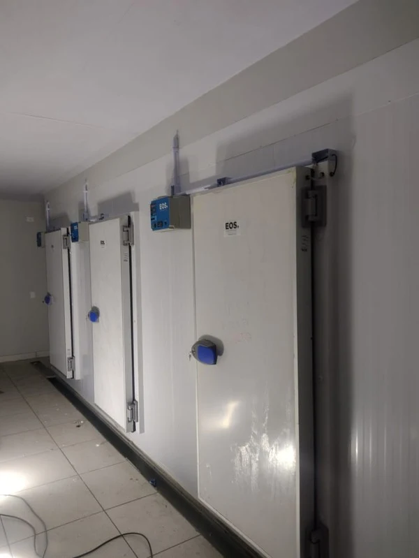
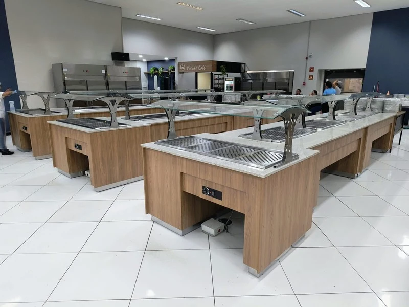
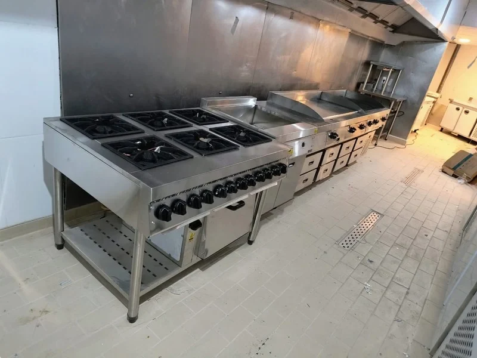
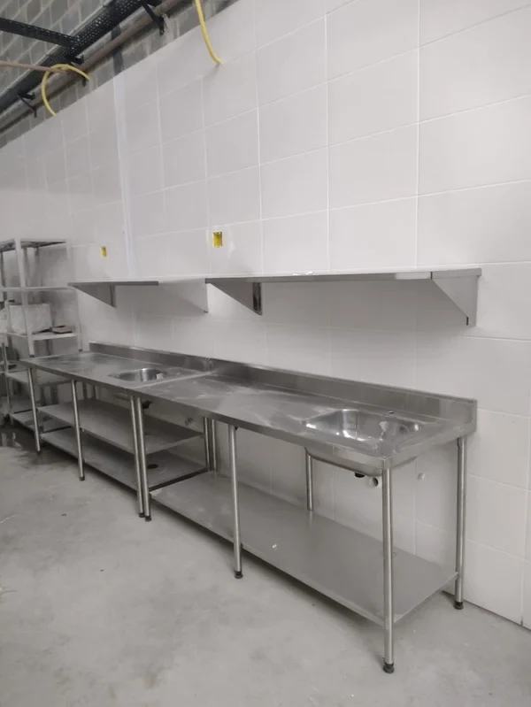

01Refrigeração industrial
Cuidado com a conservação e o desempenho dos seus equipamentos de frio.
- Câmaras frias de resfriados e congelados
- Geladeiras comerciais e freezers
- Balcões e expositores refrigerados
SOLUÇÕES PARA COZINHAS PROFISSIONAIS
Refrigeração, cocção e climatização. Cuidado técnico com os equipamentos que fazem sua operação acontecer.
MANUTENÇÃO CORRETIVA · PREVENTIVA · CONTRATOS MENSAIS

O QUE FAZEMOS
Do frio ao calor, soluções técnicas para os equipamentos da sua cozinha profissional.

01Cuidado com a conservação e o desempenho dos seus equipamentos de frio.

02Manutenção nos equipamentos que sustentam o preparo e a produção.

03Atenção aos sistemas que ajudam a manter o ambiente de trabalho adequado.
Equipamentos apresentados no material institucional da TJ.
A TJ REFRIGERAÇÃO
Precisa de uma operação bem cuidada. A TJ Refrigeração atua com soluções técnicas para cozinhas profissionais, com foco em agilidade, precisão e durabilidade.
Do diagnóstico ao acompanhamento do serviço, o objetivo é preservar o funcionamento dos equipamentos e ajudar a reduzir paradas inesperadas.
COMO PODEMOS AJUDAR
Atendimento pontual ou acompanhamento contínuo. Converse com a TJ sobre a necessidade da sua operação.
Diagnóstico e reparo de falhas para recuperar o funcionamento do equipamento.
QUANDO ALGO NÃO FUNCIONAVisitas programadas, ajustes e limpeza técnica para reduzir o risco de quebras inesperadas.
ANTES DE O PROBLEMA APARECERAcompanhamento periódico e atendimento prioritário conforme o contrato da sua empresa.
CUIDADO QUE TEM CONTINUIDADECONHEÇA NOSSO APLICATIVO
Além do contato direto com a TJ, você tem uma área para organizar seus equipamentos e acompanhar os serviços.
Guarde identificação, modelo e informações do equipamento.
Conte o que precisa e solicite um orçamento à TJ.
Consulte o andamento e converse sobre o atendimento.
Acesso pelo navegador, com a sua conta. Você também pode adicionar o app à tela inicial do celular.
TUDO EM UM SÓ LUGAR
Nome, marca, modelo, número de série e local. Os dados ficam organizados na sua conta.
Selecione um ou mais equipamentos e descreva o problema para solicitar um orçamento ao proprietário.
Consulte o andamento dos chamados e use a conversa do atendimento para falar com a TJ.
Apresentação das funções. Seus dados ficam na área do cliente.
DÚVIDAS FREQUENTES
Algumas respostas para facilitar seu primeiro contato com a TJ.
Fale com a TJ pelo WhatsApp e informe o equipamento, o problema e a sua localização. Se você já tem uma conta no aplicativo, também pode abrir um chamado na área do cliente.
Sim. Entre na sua conta, cadastre o equipamento e registre a solicitação. O proprietário analisa os dados, prepara o orçamento e combina o compartilhamento com você.
Sim. A TJ oferece visitas programadas para manutenção preventiva e contratos mensais. Consulte as condições para os equipamentos da sua empresa.
Você pode acessar pelo navegador, sem instalação. Se preferir, adicione o aplicativo à tela inicial do celular para ter um acesso mais rápido.
VAMOS CONVERSAR
Atendemos Curitiba e região. Para outras cidades, consulte a disponibilidade pelo WhatsApp.
Falar pelo WhatsAppInforme o tipo de equipamento, marca ou modelo, o problema observado e sua localização.